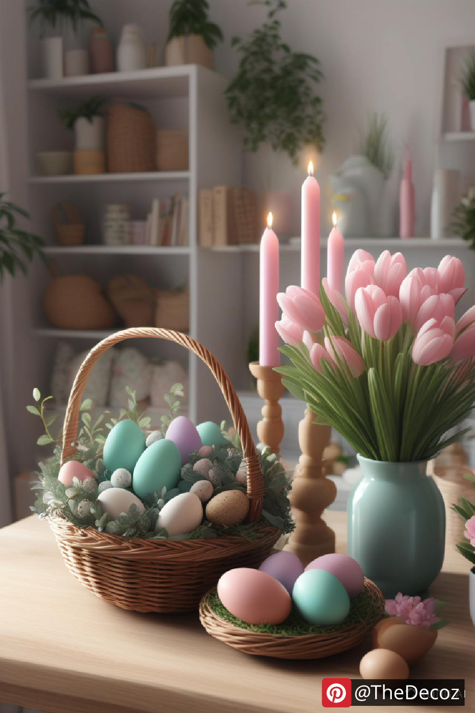
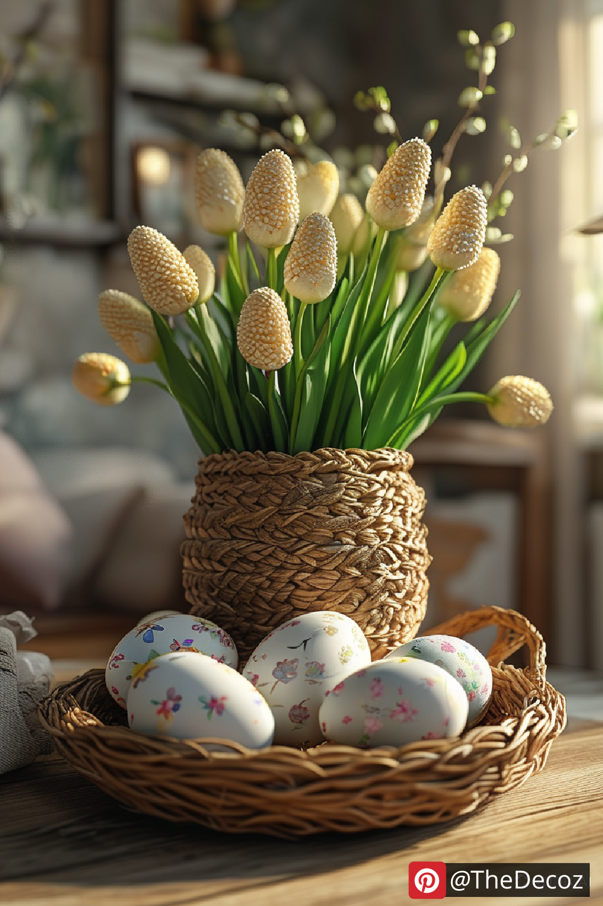
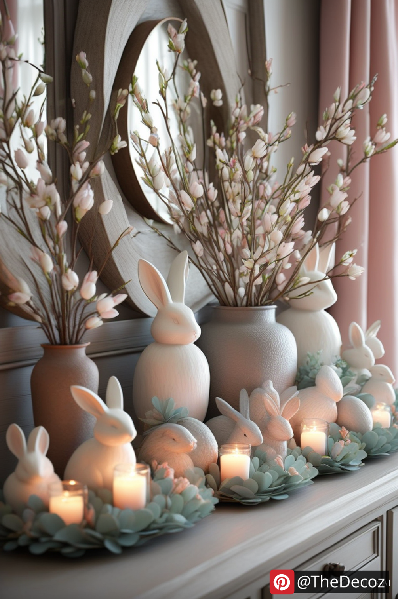
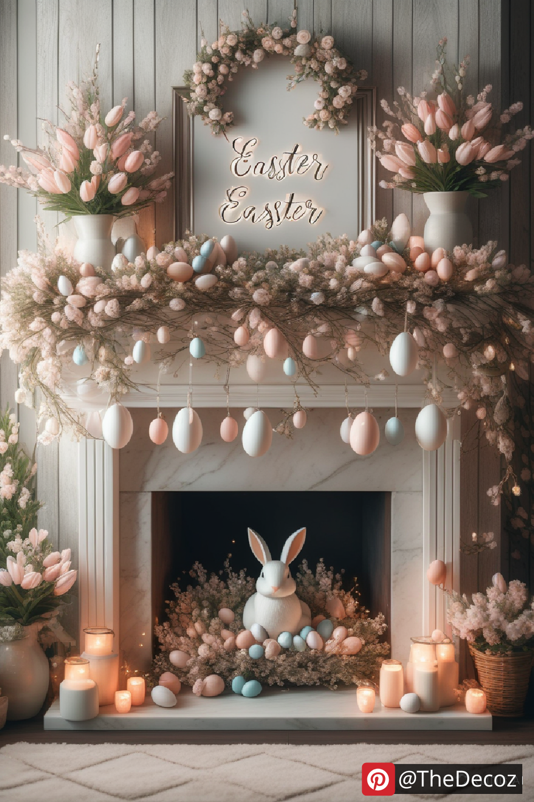

As spring approaches and nature bursts back to life, Easter offers the perfect opportunity to refresh your home with vibrant and welcoming touches. "Easter Home Decor" is more than pastel colors and bunnies—it's about creating a joyful, festive atmosphere that celebrates renewal and togetherness. Whether you’re hosting an Easter brunch or simply embracing the season, here are some innovative and timeless ideas to inspire your Easter home transformation.
Easter is a holiday rooted in themes of rebirth, growth, and family gatherings. Your decor sets the tone for this special time, turning your home into a serene yet cheerful space. A well-curated Easter home decor scheme can elevate your interiors and provide a warm backdrop for meaningful moments with loved ones.
Incorporating nature into your Easter home decor is a trend that continues to grow. Use woven baskets, rustic wooden accents, linen table runners, and fresh greenery to create a natural, relaxed ambiance. Pair these with delicate touches like moss-filled centerpieces or floral garlands for a timeless spring look.
While bold colors have their place, 2025 leans toward soft, minimalist tones for Easter. Think dusty pinks, sage greens, butter yellows, and powder blues. Incorporate these shades through decorative pillows, ceramic vases, or pastel-colored eggs for a subtle, sophisticated seasonal vibe.
A handmade wreath adds charm to your entryway or interior walls. Using fresh blooms, eucalyptus, faux eggs, and ribbons, you can craft a wreath that reflects your personal style. DIY projects like this not only add uniqueness to your Easter home decor but also offer a fun pre-holiday activity.
Your Easter table is the heart of the celebration. Layer it with textured placemats, vintage china, and centerpiece arrangements featuring tulips, daffodils, or hyacinths. Incorporate gold or brass flatware and linen napkins tied with twine or mini nests for a touch of elegance.
Eco-friendly Easter home decor is gaining momentum. Opt for biodegradable decorations, reusable wooden egg ornaments, and vintage finds. Sustainability doesn't mean sacrificing style—mixing reclaimed materials with natural spring blooms results in a chic, eco-conscious display.
Easter Egg Tree: A modern take on a traditional German custom, decorate tree branches in a vase with hand-painted eggs.
Seasonal Scented Candles: Choose fragrances like lavender, honey, or citrus to evoke a spring garden in your living space.
Personalized Name Cards: Use decorated eggs or mini clay pots as place settings at your Easter table, doubling as take-home favors.
Layered Textures: Mix knitted throws, lace curtains, and velvet cushions to create a cozy yet airy atmosphere.
Easter home decor is about striking a balance between tradition and creativity. By blending organic materials, delicate color palettes, and personal DIY touches, you can create a refreshing seasonal makeover that celebrates spring’s energy and Easter’s warmth.
Looking to make a lasting impression this Easter? Start early and let your decor tell a story of renewal, beauty, and mindful celebration.
   